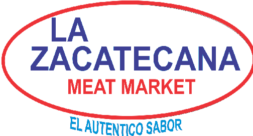

Inicio
Nosotros
Servicios
Tamales
Carniceria
Tacos
Contacto
Ubucaciones
Compra en linea
Ubucaciones en el Mapa
Lazacatecana Meat Market 2376 lavon Dr garland 75040
Redes Sociales
@LazacatecanaMeatMarket/facebook.com